Accident Risk Analysis and Severity Prediction
This project analyzes 20,000 Indian road accident records to identify accident patterns, risk factors, geographical hotspots and accident severity. Machine learning models were also developed to predict accident severity.
Total Accidents
Cities
States
Best Model Accuracy
The highest number of recorded accidents occurred in Chandigarh, with 2,577 accidents.
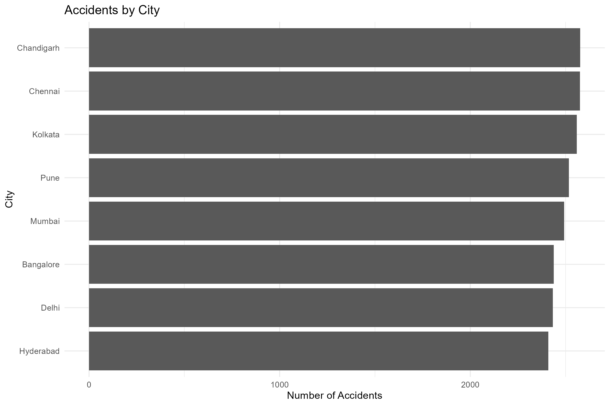
| Severity | Accidents |
|---|---|
| Minor | 11,025 |
| Major | 5,988 |
| Fatal | 2,987 |
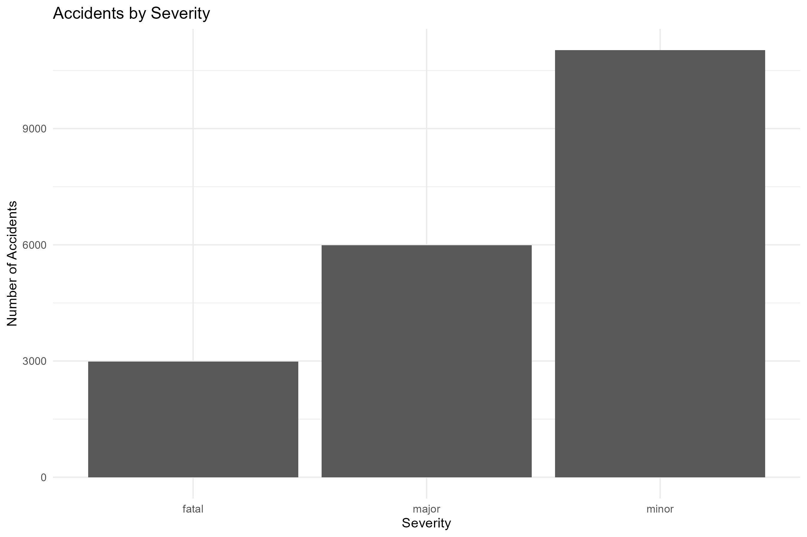
Fog had the highest average accident risk, with an average risk score of 0.589.
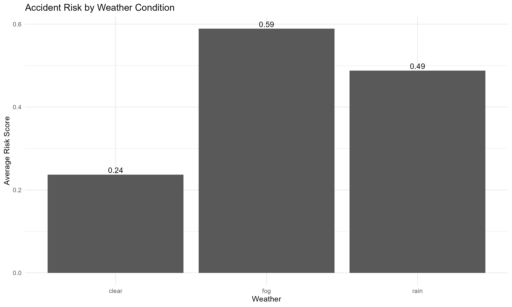
High traffic density showed the highest average risk score, with an average risk of 0.595.
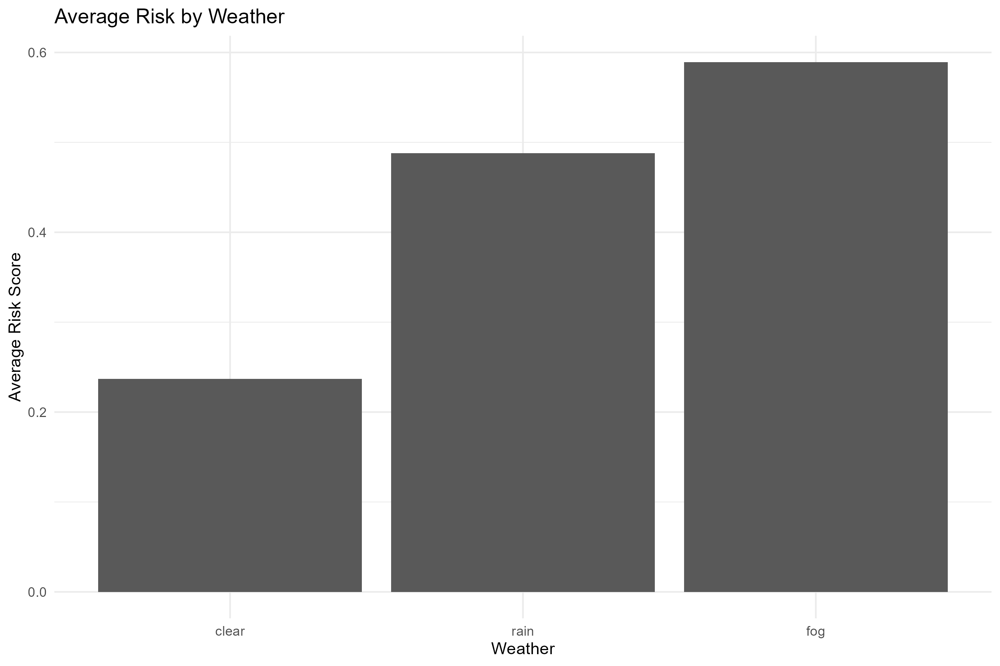
| Weather | Traffic | Severity | Average Risk |
|---|---|---|---|
| Fog | High | Fatal | 0.919 |
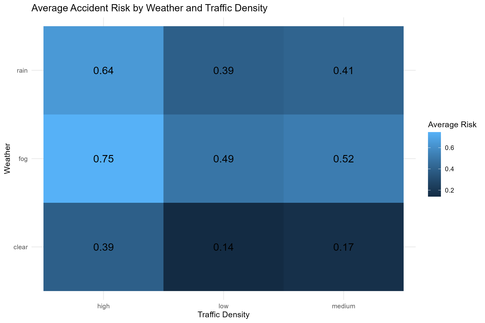
Spatial analysis identified several accident concentration zones. The highest grid contained 636 accidents around latitude 30.7 and longitude 76.8.
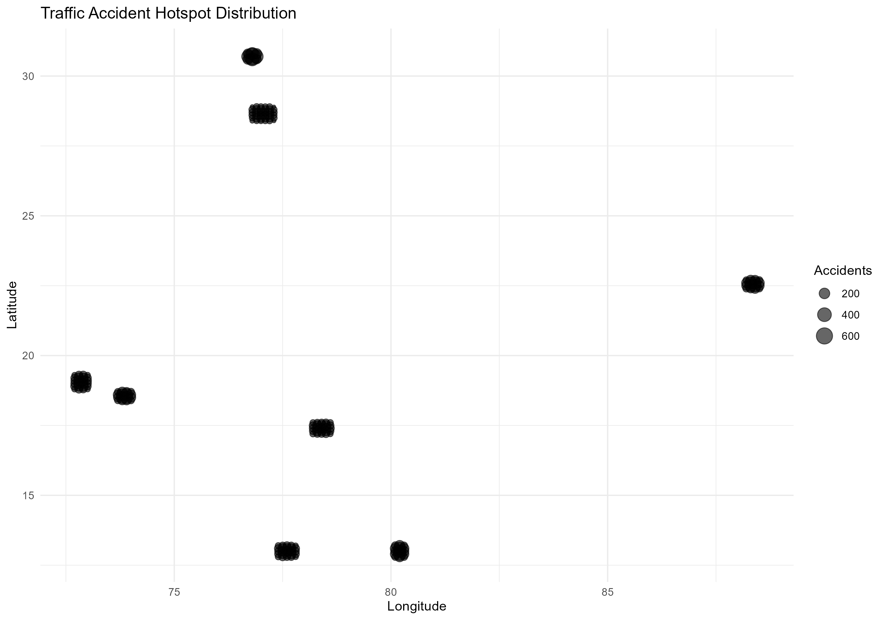
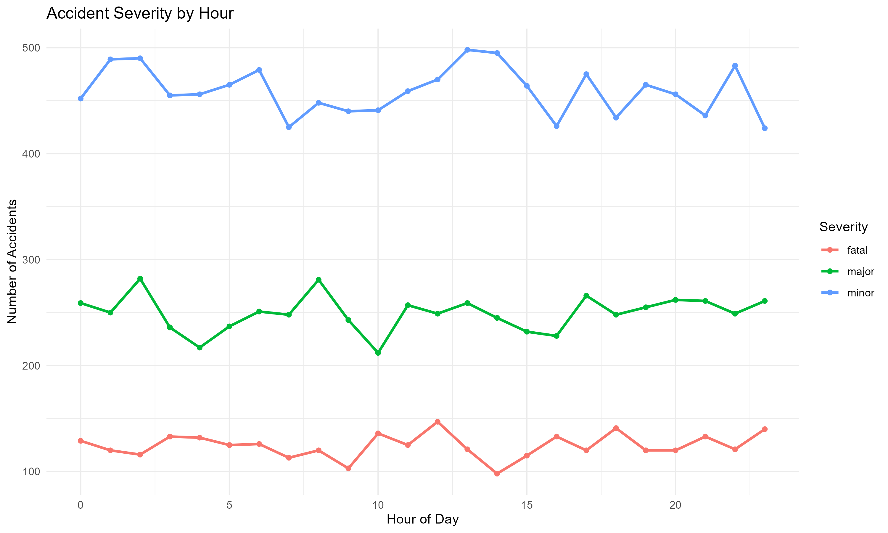
| Model | Accuracy |
|---|---|
| Random Forest | 68.45% |
| Logistic Regression | 68.45% |
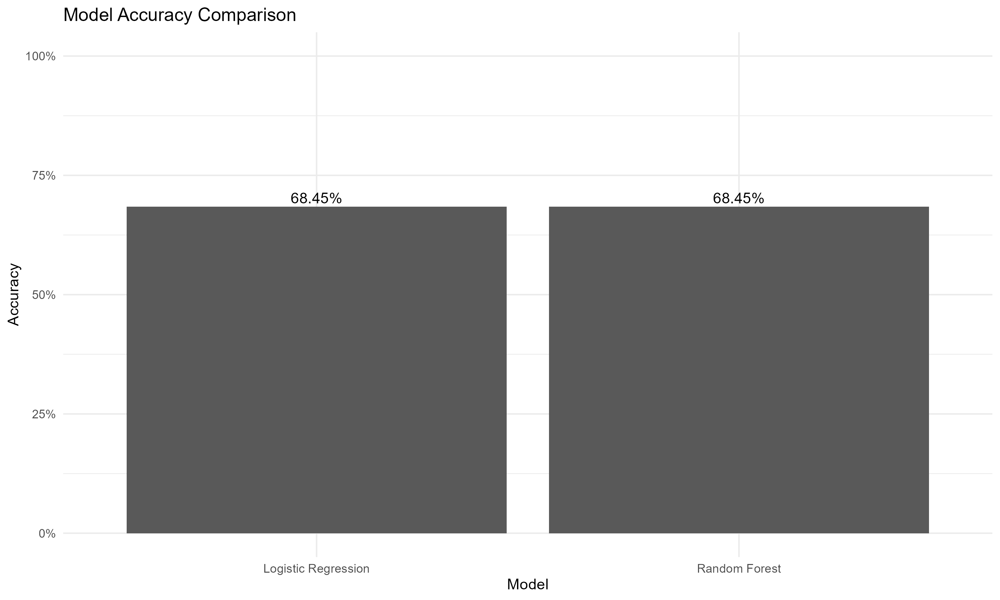
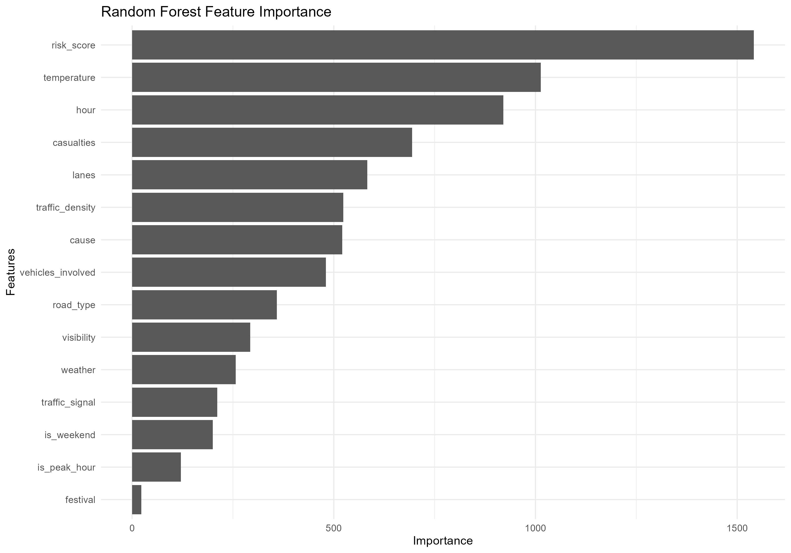
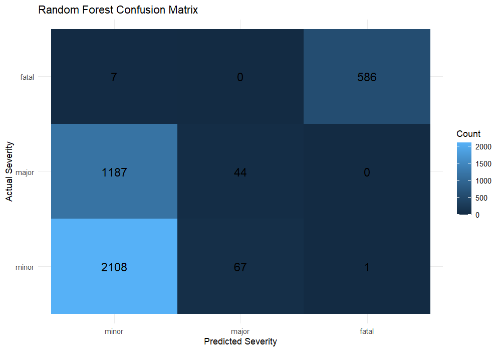
| Severity | Precision | Recall | F1 Score |
|---|---|---|---|
| Minor | 63.84% | 96.88% | 76.96% |
| Major | 39.64% | 3.57% | 6.56% |
| Fatal | 99.83% | 98.82% | 99.32% |
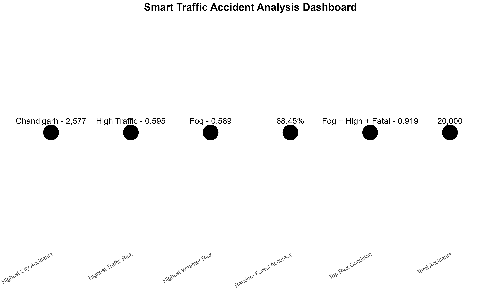
The analysis shows that weather conditions and traffic density have important relationships with accident risk. Fog and high traffic conditions produced particularly high risk values.
The Random Forest and Logistic Regression models achieved an accuracy of 68.45%. Fatal accidents were classified extremely effectively, while major accidents were considerably more difficult to classify.
The findings can support traffic authorities in identifying high-risk conditions and accident-prone areas for improved traffic management and road safety planning.
SMART TRAFFIC PROJECT
Accident Risk Analysis and Severity Prediction